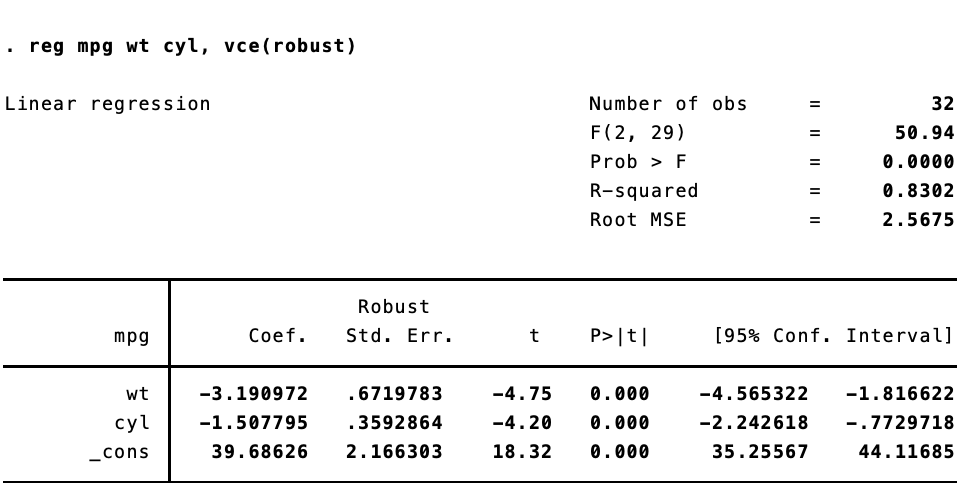
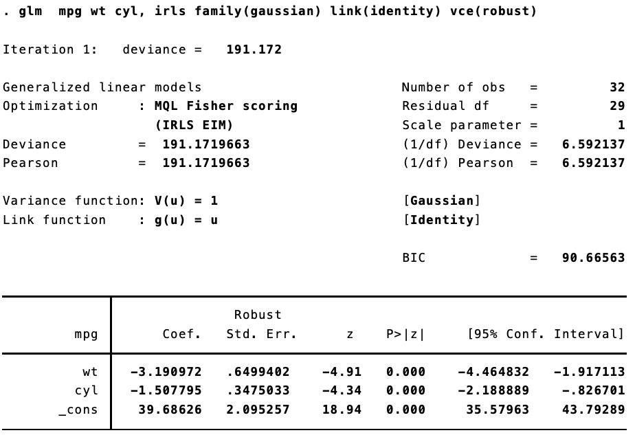
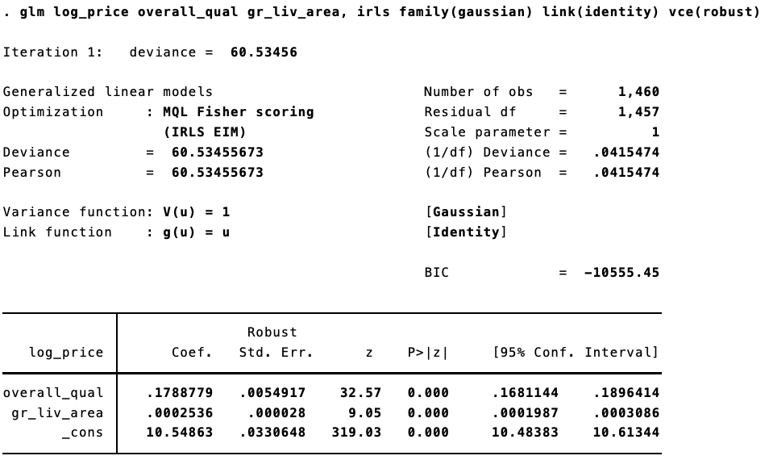

A common question when users of Stata switch to R is how to replicate the vce(robust) option when running linear models to correct for heteroskedasticity. In Stata, this is trivially easy: reg y x, vce(robust). To get heteroskadastic-robust standard errors in R--and to replicate the standard errors as they appear in Stata--is a bit more work. First, we estimate the model and then we use vcovHC() from the {sandwich} package, along with coeftest() from {lmtest} to calculate and display the robust standard errors.
A quick example:
library(tidyverse)
library(sandwich)
library(lmtest)
# Fit the model
fit <- lm(mpg ~ wt + cyl, data = mtcars)
# Summarize the model with reg SEs
summary(fit)##
## Call:
## lm(formula = mpg ~ wt + cyl, data = mtcars)
##
## Residuals:
## Min 1Q Median 3Q Max
## -4.2893 -1.5512 -0.4684 1.5743 6.1004
##
## Coefficients:
## Estimate Std. Error t value Pr(>|t|)
## (Intercept) 39.6863 1.7150 23.141 < 2e-16 ***
## wt -3.1910 0.7569 -4.216 0.000222 ***
## cyl -1.5078 0.4147 -3.636 0.001064 **
## ---
## Signif. codes: 0 '***' 0.001 '**' 0.01 '*' 0.05 '.' 0.1 ' ' 1
##
## Residual standard error: 2.568 on 29 degrees of freedom
## Multiple R-squared: 0.8302, Adjusted R-squared: 0.8185
## F-statistic: 70.91 on 2 and 29 DF, p-value: 6.809e-12# Summarize the model with robust SEs
coeftest(fit, vcov = vcovHC(fit))##
## t test of coefficients:
##
## Estimate Std. Error t value Pr(>|t|)
## (Intercept) 39.68626 2.30442 17.2218 < 2.2e-16 ***
## wt -3.19097 0.77830 -4.0999 0.0003048 ***
## cyl -1.50779 0.38636 -3.9026 0.0005209 ***
## ---
## Signif. codes: 0 '***' 0.001 '**' 0.01 '*' 0.05 '.' 0.1 ' ' 1Here are the results in Stata:

The standard errors are not quite the same. That's because Stata implements a specific estimator. {sandwich} has a ton of options for calculating heteroskedastic- and autocorrelation-robust standard errors. To replicate the standard errors we see in Stata, we need to use type = HC1.
coeftest(fit, vcov = vcovHC(fit, type = "HC1"))##
## t test of coefficients:
##
## Estimate Std. Error t value Pr(>|t|)
## (Intercept) 39.68626 2.16630 18.3198 < 2.2e-16 ***
## wt -3.19097 0.67198 -4.7486 5.1e-05 ***
## cyl -1.50779 0.35929 -4.1966 0.000234 ***
## ---
## Signif. codes: 0 '***' 0.001 '**' 0.01 '*' 0.05 '.' 0.1 ' ' 1Beautiful.
Now, things get inteseting once we start to use generalized linear models. I was lead down this rabbithole by a (now deleted) post to Stack Overflow. Replicating Stata's robust standard errors is not so simple now. Let's say we estimate the same model, but using iteratively weight least squares estimation.
In Stata:

And in R:
fit <- glm(mpg ~ wt + cyl, data = mtcars, family = gaussian(link = "identity"))
coeftest(fit, vcov = vcovHC(fit, type = "HC1"))##
## z test of coefficients:
##
## Estimate Std. Error z value Pr(>|z|)
## (Intercept) 39.68626 2.16630 18.3198 < 2.2e-16 ***
## wt -3.19097 0.67198 -4.7486 2.048e-06 ***
## cyl -1.50779 0.35929 -4.1966 2.709e-05 ***
## ---
## Signif. codes: 0 '***' 0.001 '**' 0.01 '*' 0.05 '.' 0.1 ' ' 1They are different. Not too different, but different enough to make a difference. That's because (as best I can figure), when calculating the robust standard errors for a glm fit, Stata is using $n / (n - 1)$ rather than $n / (n = k)$, where $n$ is the number of observations and k is the number of parameters.
I'm not getting in the weeds here, but according to this document, robust standard errors are calculated thus for linear models (see page 6):
$$\hat{V}(\hat{\beta}) = \boldsymbol{D}\left(\frac{n}{n-k}\sum_{j=1}^n\hat{e}_j^2\boldsymbol{x}_j^\prime\boldsymbol{x}_j\right)\boldsymbol{D}$$
And for generalized linear models using maximum likelihood estimation (see page 16):
$$\hat{V}(\hat{\beta}) = \boldsymbol{D}\left(\frac{n}{n-1}\sum_{j=1}^n\hat{e}_j^2\boldsymbol{u}_j^\prime\boldsymbol{u}_j\right)\boldsymbol{D}$$
If we make this adjustment in R, we get the same standard errors. So I have a little function to calculate Stata-like robust standard errors for glm:
robust <- function(model, stata = TRUE){
x <- model.matrix(model)
n <- nrow(x)
k <- length(coef(model))
if (stata) {
df <- n / (n - 1)
} else {
df <- n / (n - k)
}
u <- model$residuals
bread <- solve(crossprod(x))
veggie_meat <- t(x) %*% (df * diag(u^2)) %*% x
est <- bread %*% veggie_meat %*% bread
return(est)
}Let's take it for a spin.
# As before
coeftest(fit, vcov = vcovHC(fit, type = "HC1"))##
## z test of coefficients:
##
## Estimate Std. Error z value Pr(>|z|)
## (Intercept) 39.68626 2.16630 18.3198 < 2.2e-16 ***
## wt -3.19097 0.67198 -4.7486 2.048e-06 ***
## cyl -1.50779 0.35929 -4.1966 2.709e-05 ***
## ---
## Signif. codes: 0 '***' 0.001 '**' 0.01 '*' 0.05 '.' 0.1 ' ' 1# This is the same
coeftest(fit, vcov = robust(fit, stata = FALSE))##
## z test of coefficients:
##
## Estimate Std. Error z value Pr(>|z|)
## (Intercept) 39.68626 2.16630 18.3198 < 2.2e-16 ***
## wt -3.19097 0.67198 -4.7486 2.048e-06 ***
## cyl -1.50779 0.35929 -4.1966 2.709e-05 ***
## ---
## Signif. codes: 0 '***' 0.001 '**' 0.01 '*' 0.05 '.' 0.1 ' ' 1# Now for the Stata-like version
coeftest(fit, vcov = robust(fit, stata = TRUE))##
## z test of coefficients:
##
## Estimate Std. Error z value Pr(>|z|)
## (Intercept) 39.68626 2.09526 18.9410 < 2.2e-16 ***
## wt -3.19097 0.64994 -4.9096 9.124e-07 ***
## cyl -1.50779 0.34750 -4.3389 1.432e-05 ***
## ---
## Signif. codes: 0 '***' 0.001 '**' 0.01 '*' 0.05 '.' 0.1 ' ' 1Let's look at the Stata output again:
Success!
Of course this becomes trivial as $n$ gets larger.
Using the Ames Housing Prices data from Kaggle, we can see this. In R, estimating "non-Stata" robust standard errors:
options("scipen" = 10, "digits" = 5)
dat <- read.csv("train.csv") %>% janitor::clean_names() %>% mutate(log_price = log(sale_price))
fit <- glm(log_price ~ overall_qual + gr_liv_area, data = dat, family = gaussian(link = "identity"))
coeftest(fit, vcov = robust(fit, stata = FALSE))##
## z test of coefficients:
##
## Estimate Std. Error z value Pr(>|z|)
## (Intercept) 10.5486331 0.0330875 318.81 <2e-16 ***
## overall_qual 0.1788779 0.0054954 32.55 <2e-16 ***
## gr_liv_area 0.0002536 0.0000281 9.04 <2e-16 ***
## ---
## Signif. codes: 0 '***' 0.001 '**' 0.01 '*' 0.05 '.' 0.1 ' ' 1The same model in Stata:

Trivial differences!